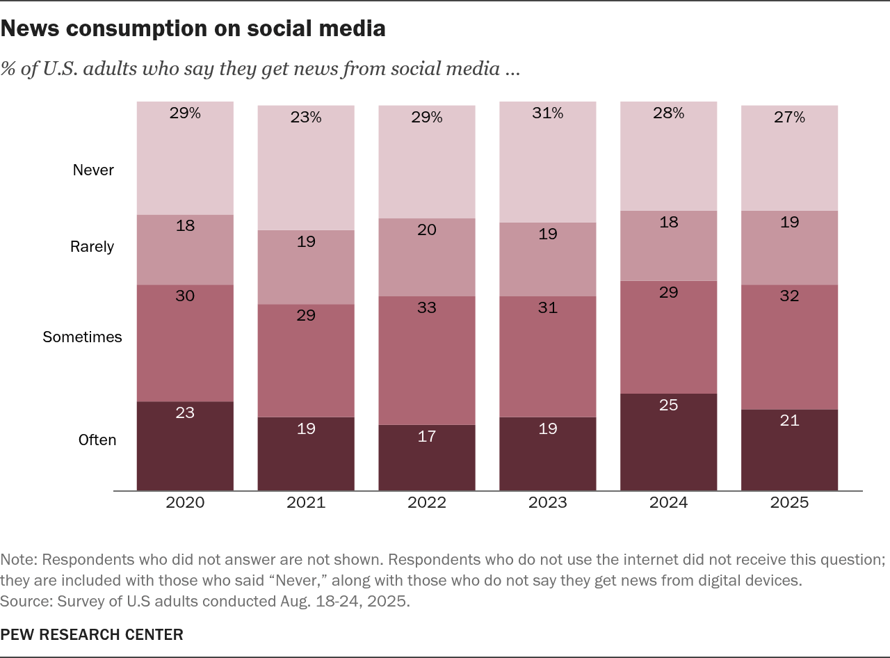
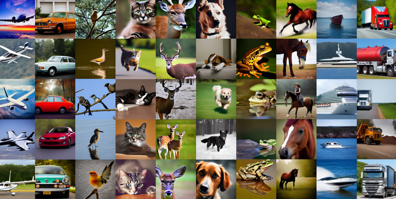
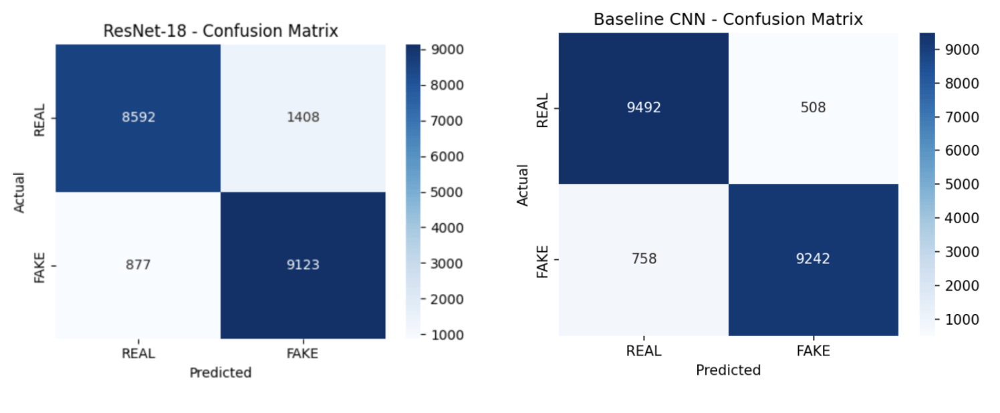
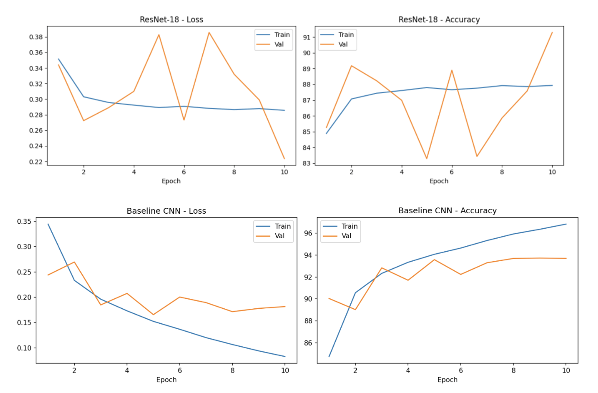
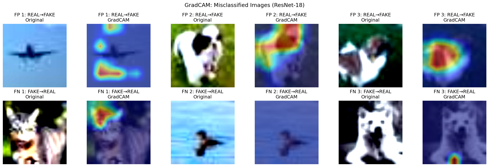

Abstract
In this project, we attempted to create a new tool to detect whether images on webpages across the Internet have been modified by artificial intelligence or feature any sort of artificial augmentation. To test this, we trained a custom CNN on the CIFAKE benchmark dataset of 120,000 real and AI-generated images. Through training, we achieved 93.67% classification accuracy, outperforming a ResNet-18 transfer learning baseline. Our tool demonstrates that task-specific and low-resolution training produces more reliable detection than general pretrained models for this domain.
Introduction
On January 3rd, 2026, President Nicolas Maduro of Venezuela was captured and arrested by a United States military strike launched by President Donald Trump. On January 5th, 2026, the New York Times published an article exposing the use of artificial intelligence tools in the photos that spread rapidly across social media following Maduro's capture.[1]

On January 22nd, 2026, civil rights attorney and activist Nekima Levy Armstrong was arrested in Minnesota after an ICE protest. That morning, Kristi Noem, the former U.S. Secretary of Homeland Security, posted a photo from her arrest on X. Thirty minutes later, the White House posted the same photo on X. Only this time, Levy Armstrong was shown in distress and actively sobbing toward the camera. With further investigation, the corruption of the photos was clear.[2]
While some images are clearly satirical and identifiable as AI-generated, the concerning use of deepfake technology and artificial intelligence tools to alter photos has seeped into the newstream that the government is meant to provide for its citizens. What starts with a clearly generated photo of the president imaged as the Pope[4] or as Jesus[5] will end with much more catastrophic uses of the same technology.

With around 53% of U.S. adults getting their news from social media[6], a number that has remained relatively stable since the Covid-19 pandemic, these uses of artificial intelligence have become more and more concerning as models grow better and harder to perceive. Without proper guardrails, there will be little protection for the average citizen, who perceptibly will not be able to check every piece of media that they casually consume.
No one likes to be tricked, and no one wants to admit that an AI-generated photo has effectively duped them. However, in a study on the Interpretation of AI-Generated vs. Human-Made Images[7], researchers Velasquez-Salamanca, Martin-Pascual, and Andreu-Sanchez found that when participants worked with a small batch of human-made and AI-generated images, they struggled to accurately identify the source. As AI tools grow more advanced, what started as being able to detect when an image generating tool has accidentally given a subject 6 fingers will end with individuals either having to constantly look into the minutia of a photo's qualities, such as shadows and slightly off-color pixels, or, worse, being unable to perceive the source of an image.
Photos carry a heavy weight in shaping our understanding of realities, near and far from our own. From the level of individual usage to usage on the scale of some of the largest governments in the world, AI has entered the practice of shaping our reality. The question then becomes: what guardrails are there for us?
With the rapid growth and development of artificial intelligence tools, there are thousands of different ways that a photo can be altered, modified, or fully generated through AI. These include fully generated photos, face alterations, and photo-edited or inpainted media. In response, the field of digital and image forensics has become increasingly important. Prior research has categorized this as both an ontological question (its ability to change our understanding of the nature of being) and an epistemological one (the reliability of the knowledge we hold).
With this understanding comes the nexus of our project: trying to understand if artificially generated photos have a clear and distinct signature that can be properly categorized and flagged. The signal for distinguishing real from AI-generated images has now fully become sub-perceptual and statistical. It can only be seen in background pixel distributions, spatial inconsistencies, and frequency artifacts that no truly human-readable rule can capture. In this case, we use a CNN because it learns to read exactly these features without having to be explicitly told.
We hypothesize that a CNN trained from scratch on task-specific low-resolution data will outperform a frozen-backbone transfer learning approach because ImageNet pretraining encodes assumptions about high-resolution structure that actively hurt performance on 32×32 inputs
Related Work
Prior work in the field of visual disinformation spans the gamut of technical and qualitative research. Wang et al.[12] demonstrated that a single forensic detector trained on a singular type of CNN generator has the ability to generalize to detect fakes from different and unseen architectures. The researchers showed that detectors did not need to be tailored for every new AI generator and that there are clear "fingerprints" that CNNs leave behind post-image alteration. While this result showed generalization is possible, they were clear that their work would have to be understood in light of the technology of their time, signalling a clear "for now" qualifier.[13]
More recently, Mahara et al.[11] published in May of 2026 a broad overview paper that covers a variety of detection methods and their limitations. The review confirms the idea of "fingerprints," the presence of consistent artifacts in frequency space as well as texture patterns. Mahara et al. also emphasizes that the fingerprints are fragile and model-dependent over time, largely due to the fact that newer generative models are designed to remove and disguise these formerly discernible artifacts. They establish that there are seven AIGI detection methodologies: spatial-domain analysis, frequency-domain analysis, fingerprint analysis, patch-based analysis, training-free methods, multimodal and reasoning-based models, and commercial detection frameworks.[14]
Industry-scale detectors such as Hive Moderation, Illuminarty, and AI or Not operate on full-resolution images and claim 90-99% accuracy depending on the generator. These are, however, closed-source and not reproducible. The standard input resolution for modern detection research is 224x224 or higher. Our 32x32 is two orders of magnitude smaller in total pixel count, which has created a resolution gap.
The current landscape of AIGI tools has also included Explainable AI (XAI), which aims to extract meaning from algorithms. By attempting to shine light on the black box of what an algorithm does, the extra layer of transparency allows individuals to become more vigilant and aware of when an image may or may not be AI-generated.
Dataset

For our project, we used the benchmark dataset CIFAKE[8][15], which includes a collection of tens of thousands of real and AI photos. One of the most critical developments in the field of AI forensics has been the creation of the CIFAKE dataset in 2023. The dataset represented the first proper benchmark for distinguishing between real-life and AI photos. Even in the three years since the CIFAKE dataset was published, there have been major changes in how these tools attempt to target these issues.
The dataset contains 60,000 real camera-captured photographs and 60,000 AI-generated images. A 32x32 RGB image has 3,072 input features per image, a figure calculated from 32x32x3. With 120,000 images in the CIFAKE set, that is a total of 120,000 x 3,072 input features. Before training, all images are resized, normalized, and converted into tensors. We carefully balanced the REAL and FAKE classes during sampling to prevent the model from developing a bias toward whichever class is more represented.
Each image has a tensor shape of [3, 32, 32]. After the first convolutional layer and pooling, the shape becomes [32, 15, 15]. After the second, [64, 6, 6]. After the third, [128, 2, 2], with 512 values fed into the classification head. The output is scalar in [0,1], and is thresholded at 0.5.
Current Tools
To understand the gap that our project fills, the landscape of current AIGI detection technology has to be understood.
Google SynthID
Google has a SynthID tool that embeds digital watermarks directly into AI-generated images, audio, text, or video across all of Google's generative AI consumer products. The technology works such that the watermark is in the pixels of the images: undetectable by the human eye but detectable by the SynthID technology. The one flaw that remains is that extensive editing, blurring, cropping, or alteration in general can hide the watermark, making it unreliable as a content tag.
Meta's AI Labels
In February of 2024, Meta made the move to label AI-generated images on its platforms[9], specifically Facebook, Instagram, and Threads. The platform now has a small disclaimer for "AI Info," utilizing metadata information as well as "industry standard indicators." While Meta has remained elusive about what these indicators are, these methods mainly look for watermarks in the metadata as well as some post-hoc detection methods. These methods, as described by the Brookings Institute[10], "fight AI with AI," looking for subtle differences in the photo.
Content Credentials (C2PA)
The Coalition for Content Provenance and Authenticity has a set of technical standards for publishers, consumers, and creators to establish the origin and edits of content produced digitally. This technical standard is called Content Credentials and is kept in a JSON-based format. Functionally, it has been described as a "nutritional label" for digital content, allowing outside users to look at the cryptographic signed metadata of an image's full provenance chain.
SynthID and Content Credentials both require the image generator to actively participate by adding a watermark or metadata tag. If the generator does not cooperate, these tools cannot detect anything.
Our model does not require anything from the generator, just the image itself. It works on any image from any source, regardless of whether or not it was specifically watermarked or tagged.
Machine Learning Approach
The project uses a Convolutional Neural Network (CNN) that is built from scratch in PyTorch, which is most effective for image classification tasks. The intuition behind CNNs lends itself naturally to our problem: CNNs can learn to detect learned visual patterns automatically, without being told explicitly what they should be looking for.
The input is a single RGB image, resized to 32 x 32 pixels. Each of the images is represented as a tensor, with the shape [3, 32, 32]. It has 3 color channels and is 32 pixels tall and 32 pixels wide. This results in 3,072 input features per image.
The output is a single scalar value between 0 and 1, as produced by the sigmoid activation. When values are above 0.5, they are classified as FAKE. When values are at or below 0.5, they are classified as REAL.
The architecture itself has three stages.
The first stage is feature extraction where three convolutional layers will progressively compress and abstract the image. The first block detects low level features such as edges and textures, making use of 32 filters. The second block detects the mid level patterns, utilizing 64 filters. The third block detects higher-order structural features, using 128 filters. Each of the blocks are followed by ReLU activation, which will help remove the unhelpful negative values, focusing on more meaningful signals from the photos, as well as max pooling, which will downsample the image.
The second stage is the classification head. Once the convolutional blocks are able to reduce the image to a smaller feature map (128x2x2), it will be flattened and passed through the two fully connected layers. A dropout layer will randomly deactivate half of the neurons during training, which is a feature that helps prevent overfitting, which will be used for regularization.
The third stage is a single sigmoid output neuron that compresses the model's prediction to a value between 0 and 1, with values above 0.5 being labeled as FAKE and below 0.5 being labeled as REAL. This binary classification is suited to the yes / no nature of the question that the browser project will aim to answer.
For training, the project uses Binary Cross-Entropy (BCELoss) as the loss function, which measures how far off the model's predictions are from the ground truth labels. The model is penalized proportionally to how confident and wrong it is. A wrong prediction made with 99% confidence will incur a much larger penalty than a wrong prediction made with 51% confidence. The optimizer used is Adam, with a learning rate of 0.001. Adam is an adaptive optimizer, meaning it adjusts its learning rates on a per-parameter basis, which makes it well suited for image classification tasks like this one. The model is trained over 10 epochs, with validation tracked after each one to monitor accuracy and catch any overfitting early.
To ensure a fair comparison between both models, all training hyperparameters were kept consistent and adopted from the course Lab 6 baseline.
Architecture Diagram
Hyperparameters
| Batch size | 64 | Adopted from Lab 6 baseline |
| Learning rate | 0.001 | Adopted from Lab 6 baseline |
| Dropout | 0.5 | Adopted from Lab 6 baseline; explore lower values (e.g. 0.3) in future work due to slight overfitting in the current training curve |
| Epochs | 10 | Modified from Lab 6 (15 to 10); reduced due to larger dataset size; validation accuracy plateaus after epoch 6, with no meaningful improvement expected beyond epoch 10 |
| Filter sizes | 32-64-128 | Adopted from Lab 6 baseline |
| Optimizer | Adam | Adopted from Lab 6 baseline |
ResNet-18 was chosen as a comparison model because it is a well-known pretrained convolutional neural network and is commonly used as a baseline for image classification tasks. By comparing our custom CNN with ResNet-18, we can better evaluate whether a simpler model trained from scratch on our task-specific dataset can perform as well as, or better than, a deeper pretrained model. This comparison is also useful because ResNet-18 applies transfer learning, where knowledge learned from a large general image dataset is adapted to a new problem. Therefore, it helps us understand whether transfer learning provides a clear advantage for our specific classification task.
For the architecture, ResNet-18 was initialized using weights pretrained on ImageNet, which is a large dataset containing over one million real-world images. For transfer learning, we froze all layers except the final layer, so the pretrained feature extractor stayed fixed during training. The original fully connected layer was then replaced with a new output layer that produces one probability score using a Sigmoid activation function. This score represents how likely the image is to be AI-generated. Since ResNet-18 is designed for 224 x 224 image inputs, all images were resized to this resolution and normalized using the ImageNet mean and standard deviation values.
Results
| Model | Accuracy | Precision (macro) | Recall (macro) | F1 (macro) |
|---|---|---|---|---|
| CNN | 93.67% | 0.9304 | 0.9285 | 0.9285 |
| ResNet-18 | 88.58% | 0.8868 | 0.8858 | 0.8857 |
Result for CNN
| precision | recall | f1-score | support | |
|---|---|---|---|---|
| REAL | 0.9020 | 0.9616 | 0.9308 | 10000 |
| FAKE | 0.9589 | 0.8955 | 0.9261 | 10000 |
| accuracy | 0.9285 | 20000 | ||
| macro avg | 0.9304 | 0.9285 | 0.9285 | 20000 |
| weighted avg | 0.9304 | 0.9285 | 0.9285 | 20000 |
Result for ResNet-18
| precision | recall | f1-score | support | |
|---|---|---|---|---|
| REAL | 0.9074 | 0.8592 | 0.8826 | 10000 |
| FAKE | 0.8663 | 0.9123 | 0.8887 | 10000 |
| accuracy | 0.8858 | 20000 | ||
| macro avg | 0.8868 | 0.8858 | 0.8857 | 20000 |
| weighted avg | 0.8868 | 0.8858 | 0.8857 | 20000 |
Confusion Matrix Analysis

The baseline CNN performed better overall, correctly classifying 9,492 real images and 9,242 fake images out of 10,000 images in each class. The model is slightly better at identifying real images than fake ones. It produced 508 false positives, where real images were incorrectly labeled as fake, and 758 false negatives, where fake images were incorrectly labeled as real. In comparison, ResNet-18 had more difficulty, especially with real images. It misclassified 1,408 real images as fake, which led to a lower precision for the REAL class compared with the baseline CNN. This suggests that ResNet-18 was more likely to over-predict the FAKE label, while the baseline CNN gave more balanced predictions between the two classes.
Training Curve Analysis

The baseline CNN showed smooth and consistent improvement over the 10 training epochs. Its training loss steadily decreased from about 0.35 to below 0.10, while the validation accuracy stabilized around 93.8%. This suggests that the model was learning effectively and generalizing well to unseen data, without strong signs of overfitting.
In contrast, ResNet-18 showed less stable training behavior. Its validation loss increased sharply several times between epochs 4 and 8, and its validation accuracy fluctuated between about 83% and 91%. These unstable changes suggest that ResNet-18 had more difficulty converging to a stable solution and did not generalize as consistently as the baseline CNN for this task.
Why the CNN Outperformed ResNet-18
Pretrained on ImageNet, which contains high-resolution real-world images. Because most layers were frozen, the model could not fully adjust to CIFAKE's small 32x32 images, leading to unstable training.
Trained from scratch directly on the CIFAKE dataset. This allowed it to learn features specific to low-resolution AI-generated image detection, making it better adapted to the task.
Even though the baseline CNN is a simpler model, it was better adapted to the task and performed more consistently than ResNet-18.
Limitations
The most pressing limitation of this project is one that was built into it from the start: the images that CIFAKE provides are 32x32 pixels. Real photographs, the kind embedded in news articles, shared across social media platforms, used by governments to shape public perception, are orders of magnitude larger. The subtle signals that distinguish an AI-generated image from a real one, the inconsistent shadows, the slightly wrong textures, the pixels that do not quite belong, exist at a level of detail that 32x32 images cannot reliably capture. When the browser extension encounters an image in the wild, it processes something fundamentally different from what the model was trained on. The gap itself matters.
This gap shows up in the training curves as well. The Baseline CNN's validation accuracy plateaus around epoch 6, hovering between 93-94%, while training accuracy continues to climb. The model, in other words, begins to memorize the training set rather than learning something more durable. For a tool meant to generalize across the entire internet, that is a meaningful ceiling and one that would require greater model capabilities. The browser extension shows that CNN confidence scores cluster around 50.1-50.3% on real images on the web. The model's confidence scores do not reflect its actual accuracy.
The ResNet-18 results complicate the picture further. In theory, a model pretrained on millions of high-resolution images should bring an advantage to this kind of classification task. In practice, its validation loss and accuracy swing dramatically across all ten epochs, never quite stabilizing. The resolution mismatch between ImageNet's photographs and CIFAKE's 32x32 inputs appears to actively work against it, and the Baseline CNN, built from scratch, trained entirely on low-resolution data, ends up being the more reliable of the two. It is a result worth sitting with, because it points directly to what this project needs next.
Ethics
While this problem attempts to address the broader ethical problems with how artificial intelligence has been used to generate and alter images, there are ethical concerns that we also had to address while creating this tool.
One issue lies within understanding what should happen when a tool misclassifies a real image as a fake one. In the case of a false positive, the repercussions may have deep and concerning impacts on those who have their created media marked as AI. On the other hand, in the case of a false negative, the worry is that, as technology continues to adapt more and more, loopholes will be found that will make it so that people know what to do and what not to do to have their images fly under the radar or pass inspection without any worries. There are equally concerning repercussions that come with the cases of false positives and negatives that can only be mitigated by increasing a confidence score in both the pipeline of classification and categorization.
Furthermore, by publishing detection methods publicly, there is the worry that this will give adversarial actors a roadmap for what signals to hide. With every improvement that we make in detection, there are more instructions for how to better generate images to hide from this.
While this project was done in the incubator of a class setting, a government-deployed version of this tool could label authentic images of state violence as AI-generated or altered. The public no longer can maintain faith in their own sight in discerning AI images and tools to detect this might not have the scope or reach to properly protect the public.
In our attempt to devise a more open, accessible way to categorize content, this still does not protect the populations that are most vulnerable to AI misinformation, such as elderly and young users. Additionally, those who are on mobile devices will not be able to use our extension. There is a built-in equity problem that is hard to address simply through building out this technology.
Conclusions
This project started with a straightforward question: if machine learning is part of what has made it harder to trust what we see online, can it also be part of what makes that trust recoverable? Based on what we found, the answer is yes, carefully, and with a clear understanding of how far that answer currently reaches.
We trained and evaluated two classifiers against CIFAKE's 120,000 real and AI-generated images. The Baseline CNN reached 93.67% accuracy with stable, consistent training curves. Compared to CIFAKE's SOTA of ~92.98% GradCAM explainability, our 93.67% marginally exceeds this. ResNet-18, despite the theoretical advantage of pretraining, achieved 88.58% and showed high volatility across epochs, a consequence, we believe, of the mismatch between its pretraining data and the low-resolution images it was asked to adapt to. The simpler, purpose-built model outperformed the more complex one, which is its own kind of finding: task-specific training matters, and a model's prior knowledge can work against it when the domain shifts enough.

We took the better-performing model and built it into a Chrome Manifest V3 browser extension. The extension scans images on a webpage automatically, sends them to the classifier, and returns a real-or-fake label alongside a confidence score, surfacing flagged images in a side panel with GradCAM heatmaps that show which regions of the image drove the model's decision. Looking at the misclassified images, patterns emerge. False positives, which are real images flagged as fake, tend to draw the model's attention to high-contrast edges and motion blur, features that can appear in real photographs under difficult shooting conditions. False negatives, where AI-generated images slipped through, often show the model focusing on background regions rather than the subject, suggesting it is reading scene-level coherence rather than the fine-grained artifacting that actually marks AI generation. These are not just interesting observations, rather, they are a roadmap for what to improve.
The clearest next step is retraining on higher-resolution data. A dataset built from real news photographs and images produced by current-generation AI tools, at something closer to the resolution users actually encounter, would close the most significant gap this project leaves open. Beyond that, layering in metadata analysis, cross-referencing an image's embedded EXIF data against its visual content, could add a second line of detection that is harder to fool than pixel-level classification alone.
What this project is ultimately arguing for, though, is not just a better model. It is a different relationship between detection tools and the people who need them. The tools to identify AI-generated images already exist for users who know where to look and are willing to do the work. The browser extension matters because it does not ask that of anyone. It runs in the background, it flags what it finds, and it brings that layer of scrutiny to the ordinary experience of reading the news: which is exactly where it needs to be. The benchmark paper in machine learning states that attention is all you need. In a world with AIGI, human attention is no longer enough.
References
- Metz, C., & Satariano, A. (2026, January 5). Nicolas Maduro AI images deepfakes. The New York Times. https://www.nytimes.com/2026/01/05/technology/nicolas-maduro-ai-images-deepfakes.html
- The Guardian. (2026, January 22). White House ICE protest arrest altered image. The Guardian. https://www.theguardian.com/us-news/2026/jan/22/white-house-ice-protest-arrest-altered-image
- Poynter. (2025). Trump White House AI political messaging. Poynter Institute. https://www.poynter.org/fact-checking/2025/trump-white-house-ai-political-messaging/
- White House. (2025). [AI-generated image of President as Pope] [Post]. X. https://x.com/WhiteHouse/status/1918502592335724809
- BBC News. (2025). AI-generated image of President as Jesus. BBC. https://www.bbc.com/news/articles/c17v8y0z9z2o
- Pew Research Center. (2024). Social media and news fact sheet. Pew Research Center. https://www.pewresearch.org/journalism/fact-sheet/social-media-and-news-fact-sheet/
- Velasquez-Salamanca, J., Martin-Pascual, M., & Andreu-Sanchez, C. (2025). Interpretation of AI-generated vs. human-made images. PMC. https://pmc.ncbi.nlm.nih.gov/articles/PMC12295870/
- Bird, J. J. (2023). CIFAKE: Real and AI-generated synthetic images. Kaggle. https://www.kaggle.com/datasets/birdy654/cifake-real-and-ai-generated-synthetic-images
- Meta. (2024, February). Labeling AI-generated images on Facebook, Instagram, and Threads. Meta Newsroom. https://about.fb.com/news/2024/02/labeling-ai-generated-images-on-facebook-instagram-and-threads/
- Brookings Institution. (2023). Detecting AI fingerprints: A guide to watermarking and beyond. Brookings. https://www.brookings.edu/articles/detecting-ai-fingerprints-a-guide-to-watermarking-and-beyond/
- Mahara, T., et al. (2026, May). Methods and Trends in Detecting AI-Generated Images: A Comprehensive Review [Overview paper].https://arxiv.org/abs/2502.15176
- Wang, S. Y., et al. (2020). CNN-generated images are surprisingly easy to spot... for now. CVPR.https://arxiv.org/abs/1912.11035
- Keuper, J. (2019). Unmasking DeepFakes with simple Features. arXiv. https://arxiv.org/abs/1911.00686
- Baraheem, S. S., et al. (2026). Methods and trends in detecting AI-generated images: A comprehensive review. Computer Science Review, ScienceDirect. https://www.sciencedirect.com/science/article/pii/S1574013726000171
- Bird, J. J., & Lotfi, A. (2023). CIFAKE: Image Classification and Explainable Identification of AI-Generated Synthetic Images. arXiv. https://arxiv.org/pdf/2303.14126